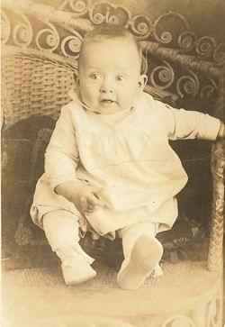
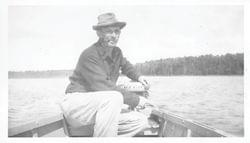
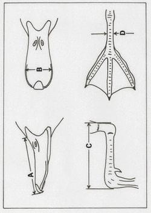
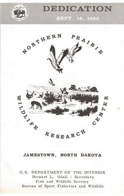
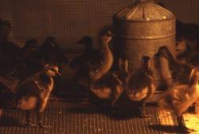
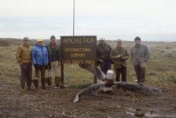
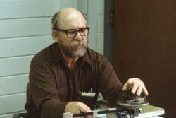

Photo courtesy of USGS Northern Prairie Wildlife Research Center.
Last updated: July 10th, 2017
Controls: Use the right and left buttons on either side of the screen to move forward or backward through the timeline. You can also use the right and left arrow keys on your keyboard.
Forrest Lee's birthplace, 1919
Born near Pettibone, North Dakota, as a child Lee sat atop a one-horse cultivator on his father’s North Dakota farm in the 1920s marveling at the flights of geese.

Forrest Lee at six months old. Image courtesy of George Lee.
Family photo including Forrest Lee, his brother Wesley and their parents in Pettibone, ND. Image courtesy of George Lee.
Forrest Lee's primary school report on Abraham Lincoln. Report courtesy of George Lee.
Forrest Lee's introduction to science workbook from the 1935-1936 school year. Book courtesy of George Lee.
Boy Scouts of American certificate for poultry keeping, 1933. Badge courtesy of George Lee.
St. Cloud Teacher's College, 1942
Forrest attended St. Cloud Teacher's College to study biological sciences before going on to teach physics and biology at East Chain Lake school. Lee regarded professor George W. Friedrich as a major influence in his life both during and
after college. Friedrich was a “great conservationist” who taught Forrest “intellectual honesty.”
Forrest Lee on graduation day at St. Cloud Teacher's College. Photo courtesy of George Lee.
Notes from Forrest's 50th reunion at St. Cloud Teacher's College. Letter courtesy of George Lee.
The student directory from St. Cloud Teacher's College from 1939-1940. Student directory courtesy of George Lee.
Army, 37th Infantry Division, World War II, 1943 - 1946
At the age of 24, Forrest was inducted into the Army's 37th Infantry Division before being deployed to the Pacific Theater on October 30th, 1944. While in the Philippines Lee exchanged many letters with his parents where he detailed local
plant and animal communities as well as the fertility of the soil.
Forrest was honorably discharged on February 15th, 1946 at age 27 after receiving several awards including the Good Conduct medal and the Philippine liberation ribbon with bronze star.
Forrest Lee (Row C #24) and his unit before being sent overseas for WWII. Photo courtesy of George Lee.
Forrest Lee in his Army uniform. Photo courtesy of George Lee.
The Japanese printed currency during the occupation of the Philippines. The GIs found bundles of these notes in caves and other hiding places. These particular notes were sent home by Forrest to his family.
Forrest Lee holding a Philippino baby during the war. Photo courtesy of George Lee.
Forrest Lee in his Army uniform. Photo courtesy of George Lee.
Forrest Lee in the Philippines with the Army. Photo courtesy of George Lee.
Forrest Lee's unit in the 37th Infantry of the U.S. Army. Photo courtesy of George Lee.
US Army 40th Division landing at Lingayen Beach 1945, Lingayen, Pangasinan Province, Luzon Island, Philippines.
Photo by U.S. Army Soldier from
John Tewell,
CC BY-NC 2.0.
University of Minnesota, 1946 - 1948
After returning to the states and recovering from Malaria, Forrest continued his education at the University of Minnesota with financial support from the GI Bill. Lee attended lectures by none other than Aldo Leopold, author of the Sand County
Almanac. He received a graduate degree in wildlife management and botany in 1948 at age 29.
A postcard form Forrest Lee to his parents after being sworn in to the Army. Postcard courtesy of George Lee.
Forrest Lee at Itasca State Park, 1947. Photo courtesy of George Lee.

Forrest Lee on the water at Itasca State Park, 1947. Photo courtesy of George Lee.
Minnesota Conservation Department, 1949
At age 30, Forrest began his professional career, starting as a game biologist with the Minnesota Conservation Department and working his way up to supervising all game research for the state by age 43.
Forrest with the Minnesota Division of Game and Fish. Photo courtesy of George Lee.
The Conservation Volunteer, September 1950, a periodic publication of the Minnesota Department of Conservation. Publication courtesy of George Lee.
Lee authored many articles for the Conservation Volunteer. Publication courtesy of George Lee.

Lee was an accomplished artist who drew many of the illustrations necessary for his work. He also included drawings while courting his future wife, Janet. Drawings courtesy of George Lee.
Rediscovering the giant Canada goose, 1962
Forrest observed a flock of Canada geese on Silver Lake in Rochester Minnesota, then convened a team of researchers to verify that the birds were the giant Canada goose (Branta canadensis maxima), previously thought to be extinct.
Photo from Lee's chapter Return of the Giants in Restoring America's Wildlife. Canada geese at Silver Lake, MN. Photo by Jack Heather, MN Department of Natural Resources.
Newspaper clipping detailing the rediscovery of the giant Canada goose.
Department of the Interior press release announcing the rediscovery of the giant Canada goose.
A story on the return of the giant Canada goose by Sand Lake National Wildlife Refuge manager and close friend of Lee, Lyle Schoonover.
Photo from Lee's chapter Return of the Giants in Restoring America's Wildlife. Giant Canada goose. Photo by Mike Johnson, North Dakota Game and Fish Department.
Excerpt from Lee's chapter Return of the Giants in Restoring America's Wildlife. Approximate breeding range of the giant Canada goose prior to settlement. (From Harold Hanson's book, The Giant Canada Goose, 1965.)
Northern Prairie Wildlife Research Center Canada goose production and restoration program, 1965
Forrest and his family moved to Jamestown, North Dakota in 1965 where Forrest would head the Northern Prairie Wildlife Research Center’s Canada goose production and restoration program.
Forrest Lee with an incubator tray. Photo courtesy of Northern Prairie Wildlife Research Center.
North Dakota’s Home Grown Honkers: Once a ‘Giant’ Dream. Photo by Mike Johnson, North Dakota Game and Fish Department.
Forrest Lee banding geese at Chase Lake National Wildlife Refuge.
Forrest Lee with a giant Canada goose. Photo courtesy of Northern Prairie Wildlife Research Center.

Program from the 1965 dedication of the Northern Prairie Wildlife Research Center in Jamestown, ND.
Home Grown Honkers, Volume 75 (154 pages) by Forrest Lee, edited by Herbert H. Dill, Forrest B. Lee. Published by Bureau of Sport Fisheries and Wildlife, 1970. Original from Indiana University; digitized on Oct 26, 2012.
Sophisticated nesting structures like this are commonly used in captive propagation programs. Free flying giant Canada geese will readily nest on a muskrat house or bale of hay or straw, as long as it is elevated. Photo by Kansas
Fish and Game.
Aleutian Canada Goose Recovery Team, 1970’s
Forrest was appointed one of the six members of the Service’s Aleutian Canada Goose Recovery Team following it's classification as endangered on March 11, 1967.
Forrest spent May through August from 1976-1980 on Amchitka Island raising Aleutian Canada Geese and translocating them to fox-free Aleutian Islands. He continued his extensive involvement with the Program through the 1990’s.
Aleutian cackling gosling ready to be measured. Photo courtesy of George Lee.
Aleutian cackling gosling. Photo courtesy of George Lee.

Aleutian cackling goslings in a brooder box. Photo courtesy of George Lee.
Aleutian cackling goslings in lupine. Photo courtesy of George Lee.
Aleutian cackling goslings in a brooder box . Photo courtesy of George Lee.
Flying Aleutian cackling geese. Photo courtesy of George Lee.

Aleutian cackling goose recovery team at Amchitka Island airport June 24th, 1978. Photo courtesy of George Lee.
Forrest Lee feeding Aleutian cackling goose during 1994 translocation. Photo courtesy of George Lee.
Forrest Lee at Alaska Maritime National Wildlife Refuge in 1995. Photo courtesy of George Lee.

Forrest Lee weighing a gosling. Photo courtesy of George Lee.
Forrest Lee at Amchitka Island February 1978. Photo courtesy of George Lee.
Forrest Lee on Amchitka Island, summer 1979. Photo courtesy of George Lee.
Forrest after a successful morning of fishing. Photo courtesy of George Lee.
Forrest inspecting a shipping box for transporting geese. Photo courtesy of George Lee.
Aleutian cackling goose with egg. Photo courtesy of George Lee.
Aleutian cackling gosling in an incubator box. Photo courtesy of George Lee.
Aleutian geese held prior to their release. Photo courtesy of George Lee.
Aleutian cackling goose. Photo courtesy of George Lee.
Restoration of Asian Aleutian CanadaGoose Population, 1980's - 1990's
Throughout the 1980’s-1990’s, Forrest collaborated with Japanese and Russian wildlife agencies on a program to reestablish Aleutian Canada Geese in the Asian portion of their range. Forrest was affectionately referred to as “Father
Goose” by the Japanese and Russian biologists.
Forrest Lee in Anchorage with crates of Aleuthian cackling geese ready to be shipped to Kamchatka, September 30th, 1992.
Dr. Nickolai Gerasimov greeting Forrest Lee on translocation flight to Kamchatka September 30th, 1992.jpg.
Forrest Lee with the Gerasimov Family in Kamchatka, Russia October 1992. From left to right Nickolai Gerasimov, Yuri Gerasimov, Forrest Lee, and Yuri Gerasimov's daughter.
A Japanese follow-up on a North Dakota Outdoors article on Forrest Lee.
Forrest Lee with members of the Japanese Association for Wild Goose Protection, May 1983.
Forrest Lee posing for a photo with Fumio Sakumo of Japan in Kamchatka, Russia 1992.
We Call Him Father Goose
At Adak in the summer of ninety-four,
A Great Plains gentleman came down to the shore.
With wealth of goose lore and a smile on his face,
He signed on the crew and brought cheer to the place.
Forrest was our guide in moving the geese,
His hands talk, his voice soothes - he put them at ease. At 10 and at 4, white apron under light,
Forrest ran in the tubes and fed them just right.
In their new island home now they must fend off disaster, I'm betting they recall a boat and a master.
If Forrest Lee needs respite from the trials of this earth. He can head for the Tiglax, we've saved him a berth.
A poem by several of Forrest's colleagues from the Aleutian cackling goose recovery team after a job well done in the 1994 translocation. Photo courtesy of Lee family.